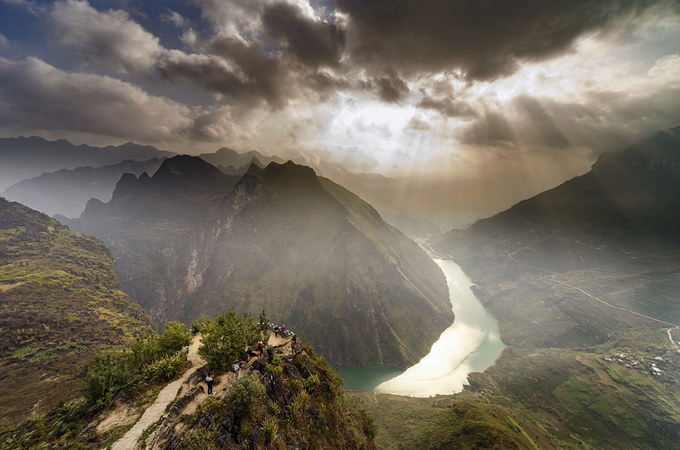

"Đứng giữa mây ngàn,
thấy quê hương mình lớn rộng."
Hãy nhắm mắt lại và cảm nhận tiếng gió rít qua những triền đá tai mèo, tiếng lá cờ 54m² vỗ phần phật trong không trung. Đó là hơi thở của biên cương, là nhịp đập của trái tim Việt Nam nơi cực Bắc.
Điểm mốc cực Bắc thiêng liêng
Tọa lạc trên đỉnh núi Rồng (Long Sơn) ở độ cao 1.470m, Cột cờ Lũng Cú là điểm đánh dấu cực Bắc của Việt Nam. Cách thành phố Hà Giang 160km đèo dốc ngoạn mục, đây là nơi khẳng định chủ quyền ngàn đời.
Từ thời Lý, Thái úy Lý Thường Kiệt đã cắm cờ khẳng định lãnh thổ. Đến thời Tây Sơn, vua Quang Trung đặt trống đồng tại trạm gác biên ải. Mỗi hồi trống vang lên là lời báo hiệu bình yên cho bờ cõi phía Bắc.
Bản sắc văn hóa Việt
Thiết kế tinh xảo từ chân bệ bát giác đến lá cờ rộng lớn, mang đậm linh hồn dân tộc.
Lá cờ thiêng liêng
Tượng trưng cho sự đoàn kết của 54 dân tộc anh em. Lá cờ 9m x 6m luôn tung bay kiêu hãnh giữa gió ngàn cực Bắc.
Bậc đá vinh quang
Hành trình chinh phục qua 3 chặng bậc đá để chạm tay vào bệ cột cờ, cảm nhận sự kiên cường của những người lính giữ biên cương.
Trống đồng Đông Sơn
Chân bệ bát giác gắn 8 mặt trống đồng và 8 bức phù điêu đá xanh minh họa lịch sử hào hùng của đất nước.
Góc nhìn từ đỉnh Núi Rồng
Hai hồ "Mắt Rồng"
Huyền thoại về nguồn nước ngọt vô tận dưới chân núi thiêng.
Lạc giữa kỳ quan
Bản Lô Lô Chải
Khám phá ngôi làng cổ tích với nhà trình tường vách đất và ngói âm dương trầm mặc.
Thưởng thức Cafe Cực Bắc
Nhâm nhi hương vị nồng nàn trong tiết trời se lạnh, ngắm nhìn cột cờ sừng sững phía trời cao.
Cẩm nang từ A - Z
Chuẩn bị cho hành trình vạn dặm
Thời điểm lý tưởng
- • T10 - T11: Mùa hoa tam giác mạch hồng rực.
- • T2 - T3: Bức tranh hoa đào, hoa mận bừng sáng.
- • T9: Mùa lúa chín vàng óng trên ruộng bậc thang.
Hướng dẫn di chuyển
Cung đường QL4C vượt những con đèo ngoạn mục. Bạn có thể thuê xe máy tự do trải nghiệm hoặc đi ô tô dịch vụ. Lưu ý tay lái phải vững với các khúc cua tay áo.
Thông tin hữu ích
Giá vé: 25.000 VNĐ/người lớn.
Tiện ích: Có hệ thống xe điện hỗ trợ người già/trẻ nhỏ từ bãi xe lên lưng chừng núi để giảm quãng đường leo bộ.
Hành trình tiếp nối

Dinh Vua Mèo
Kiệt tác kiến trúc bằng gỗ sa mộc và đá xanh giữa thung lũng Sà Phìn.
Phố Cổ Đồng Văn
Nơi thưởng thức thắng cố, rượu ngô và dạo chợ đêm rộn rã cuối tuần.

Đèo Mã Pì Lèng & Sông Nho Quế
Chinh phục "tứ đại đỉnh đèo" và đi thuyền trên dòng nước xanh ngọc bích.